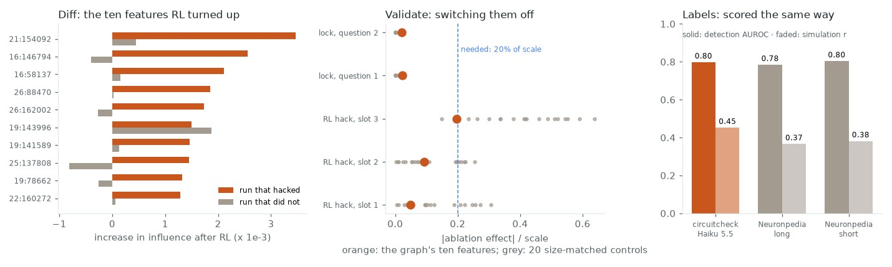

← Research·Experiments·
circuitcheck: the circuits episodes’ checks, packaged, reproduce both verdicts
Circuits beyond single neurons, episode 3. Episodes 1 and 2 each needed custom code to show that an attribution graph’s top features read a behaviour rather than drive it. circuitcheck turns that code into three tools anyone with circuit-tracer can run. On the episodes’ own models it reproduces their findings: the same ten RL features, and a readout verdict for the graph’s top features in both organisms.

make_figures.py.Summary: the short answer and the key results
In short
Can the checks behind the circuits episodes be packaged so anyone can run them, and do they reproduce the episodes’ verdicts?
Yes. The graph diff picks episode 2’s ten RL features, in order, from the same 48 graphs. Run live, the validator calls the graph’s top features a readout on both organisms: 3 of 3 comment slots for the RL hack, 2 of 2 questions for the password lock. Claude Haiku 5.5 labels 50 Gemma-2-2B features as well as Neuronpedia’s labels on detection and better on simulation, for $0.26 in total.
Key results
| What we tested | Result | Compared with |
|---|---|---|
| Does the validator reproduce “readout, not switch”? | Yes: the graph’s ten features, switched off together, are a readout at 3/3 RL-hack slots and on 2/2 lock questions (ablation 2-20% of scale, never beating size-matched controls) | 20 random and 20 size-matched control sets per group; bar 20% of scale and p ≤ 0.05 against both |
| Does the diff reproduce episode 2’s selection? | Yes: the same ten features in the same order; 9/10 specific to the run that hacked, 6/10 replicate in another seed | Episode 2’s hand-written selection |
| Is RL’s change bigger than graph-to-graph noise? | Yes: total change 0.333 against 0.111 under random before/after swaps (p = 0.012, the floor for 8 pairs); two halves of the prompts share 70% of the top ten | Chance overlap 0.2% |
| Do the base-model transcoders still fit after RL? | Yes: reconstruction error (FVU) 0.500 before, 0.499 after, measured live | Episode 2’s 0.500 and 0.499 |
| Are cheap labels as good as Neuronpedia’s? | Haiku 5.5: detection AUROC 0.80, simulation r 0.45 (50 features, $0.26) | Neuronpedia’s labels: 0.78 and 0.80 AUROC, r 0.37 and 0.38; gpt-5-mini explainer 0.78 |
| Does the explainer know when its label is good? | No: stated confidence correlates r = 0.11 with the score earned | Detector calibration error 0.26 |
01Introduction
Ask an attribution graph why Qwen3-1.7B writes “// Green hills” after RL paid it for keywords, and it names ten features with confidence. Switch all ten off, and the model goes on stuffing its comments. Episode 2 needed four scripts and a pre-registration to show that. This note packages those scripts.
What is known. circuit-tracer builds attribution graphs from transcoders, and its interventions let a user switch features off. In episode 1 (a password lock) and episode 2 (an RL reward hack), the graph’s top features were on-topic but not needed: readouts, not switches.
What is missing. The library ranks features; it does not test them. There is no built-in control, no null for comparing graphs across checkpoints, no validity check for using base-model transcoders on a fine-tuned model, and no labels for transcoders that Neuronpedia does not host. Users ask for these on the issue tracker (#7, #9, #20, #49).
Can those checks be packaged so anyone can run them, and do they reproduce the episodes’ verdicts?
What this note does.
- a tool,
circuitcheck, with three parts: a graph diff, a circuit validator and feature labels, plus a circuit-tracer adapter, HTML reports, a command line, tests, notebooks and documentation; - a reproduction of episode 2’s selection and of both episodes’ readout verdicts, run on the episodes’ own checkpoints;
- a measurement of cheap autointerp against Neuronpedia’s labels, scored on equal terms.
What would count as success. Set before the live runs:
- The diff matches. On episode 2’s graphs it selects the study’s ten features.
- The validator matches. Live, the graph’s top features, switched off together, are not a switch in either organism, while the toy model’s planted switch is found.
- The labels hold up. Scored by the same detector on the same held-out records, Haiku 5.5’s labels are at least as good as Neuronpedia’s.
02What is in the toolkit
| Tool | What it does | Checks built in |
|---|---|---|
| diff | Sums each feature’s influence over positions, so graphs of the same prompts before and after training compare; reports gained, lost, up and down features and edges | Paired swap null with a Benjamini-Hochberg correction; bootstrap interval; split-half stability; control run (specific?) and replication seed; replacement, completeness, error influence and per-layer FVU before and after, with the base-model caveat in every report |
| validate | Ablation (set to 0), steering (×3) and a counterfactual patch for each group of features, and a verdict: switch, partial, backup, nonspecific or readout | 20 random sets matched by layer and position and 20 matched by write size (|activation| × decoder norm); Gao’s swap test for label rules, in a checked sandbox; a note when too few controls make p ≤ 0.05 impossible |
| labels | Explains a feature from its top 12 records; scores the label on 8 activating and 8 silent held-out records | Detection AUROC, balanced accuracy and Brier score; simulation correlation; calibration of confidence and detector; a reply cache; Neuronpedia export and a fair comparison with Neuronpedia’s labels |
Everything except the circuit-tracer backend runs without a GPU, on the toy model, the bundled graphs and the cached replies. Video 1 shows each tool in a minute:
03How the study was run
- Toy model first. A linear model with a planted switch, two readouts, a redundant pair and 40 noise features; the validator must recover all five (it does, in the tests).
- Diff on episode 2’s 48 graph summaries (8 prompts × before/after × three runs), compacted from the study’s graph dumps.
- Live runs on Modal. Qwen3-1.7B: per-layer FVU on both checkpoints over the 8 graph prompts; two fresh graphs per side summarised with
from_circuit_tracerand compared with the study’s; the validator on the ten features at three comment slots, with the metric log-sum-exp of the keyword logits minus the alternative token. Qwen3-8B lock: the validator on episode 1’s ten claimed features on the first two held-out questions the lock gets wrong without the password and right with it; metric logit(correct letter) − logit(locked letter); the password prompt as the counterfactual. - Labels. 21 features from circuit-tracer’s Dallas/Austin graph that Neuronpedia hosts and 29 random ones (seed 0), from Neuronpedia’s activation records; Haiku 5.5 explains and detects; Neuronpedia’s two labels per feature scored by the same detector; gpt-5-mini as a second explainer.
- Re-check.
make_figures.pyrecomputes every number here from the shipped data;tests/test_live_results.pyre-applies the verdict rules to the stored live checks.
| Fixed before any live run | Changed after reading results |
|---|---|
| Verdict rules and thresholds (20% of scale, p ≤ 0.05 against both control kinds, 30% of the gap for a patch); 20 controls per kind; steering ×3 | Diff statuses: thousands of features changed consistently on all 8 prompts, so “up”/“down” now require a Benjamini-Hochberg-adjusted p, and the report states the p floor |
| The ten features of each episode; the slots and the first qualifying questions | Lock questions: 2, not 3, after the first launch read the 8B transcoders from disk on every pass (hours); weights then kept in memory on an H200. Results unaffected |
| Label splits (12 explain, 8 + 8 held out); the detector model | The detector prompt now states the excerpt count and retries once: 10 of 148 detection replies in the first run miscounted or came back empty. The reply cache got a lock after parallel workers missed it |
04Results
The diff picks episode 2’s ten features, and RL’s change beats the null
On the 48 graphs, diff_graphs returns the same ten features episode 2 selected by hand, in the same order (Figure 1, left; the test test_reproduces_rl_hack_selection pins it). Nine change less than a quarter as much in the run that never hacked, and six are in the replication seed’s top 50, as in the study.
The whole-graph change is 0.333, against a mean of 0.111 when before and after are swapped at random within prompt pairs; none of the 256 swaps does better than the real labelling (p = 0.012, the smallest value 8 pairs allow). Two random halves of the prompts agree on 70% of the top ten, where chance is 0.2%. RL also left the dictionary’s fit unchanged: FVU 0.500 before and 0.499 after, recomputed live and equal to the study’s. Fresh graphs built live and summarised by from_circuit_tracer share 19 or 20 of their top 20 features with the study’s graphs.
Live, the graph’s top features are a readout in both organisms
Switched off together, the RL hack’s ten features move the keyword metric by 5%, 9% and 20% of its scale at the three slots, and size-matched random features move it as much or more (p = 0.71, 0.48 and 0.90 against them; Figure 1, middle). The lock’s ten move the answer by 2% of the gap on both questions, and patching in their values from the password prompt closes 2% and 0% of it. Every one of the five group verdicts is readout.
Two single features stand out. At the third RL-hack slot, 26:88470 alone meets the switch rule: ablation −0.98 (30% of scale), beating both control kinds at p = 0.048, the smallest value 20 controls allow. With 11 groups at 3 slots, about 1.6 such hits are expected by chance at α = 0.05, and this is the only one. On the second lock question, 35:97855 is a backup: switching it off moves the answer 9%, pushing it moves it 21%. Neither changes the episodes’ conclusions: the metric here is the next token, and episode 2 already showed that switching off all ten during generation leaves 32 of 32 sketches hacking.
Cheap labels match Neuronpedia’s on detection and beat them on simulation
| Labels | Detection AUROC | Simulation r | Features |
|---|---|---|---|
| circuitcheck, Claude Haiku 5.5 | 0.80 | 0.45 | 50 |
| Neuronpedia, long LLM label | 0.78 | 0.37 | 50 |
| Neuronpedia, short label | 0.80 | 0.38 | 48 |
| circuitcheck, gpt-5-mini explainer | 0.78 | – | 50 |
Feature by feature against the long Neuronpedia label: 15 wins, 12 losses, 22 ties (within 0.05), 1 not scored. Labelling all 50 features and scoring all three label sets cost $0.26 at list prices; the gpt-5-mini explainer cost $0.013. The explainer’s stated confidence is no guide (r = 0.11 with the score earned), and the detector is underconfident: a third of the excerpts it gave about 5% turned out to be active (expected calibration error 0.26).
05Implications for AI safety
A graph is a hypothesis about a mechanism, and both episodes show how easily its top features are mistaken for the mechanism. A safety team that reads a circuit off a graph, for a monitor, an unlearning target or an audit, needs the null and the controls by default, not as a research project. circuitcheck makes them one function call, and its reports say when the transcoders themselves may not fit the model being audited.
Before acting on a circuit from an attribution graph, switch it off against size-matched random features and check that the transcoders still fit the model.
06What this does not show
- Small live samples. 3 slots and 2 questions; the verdicts agree with the episodes’ larger causal tests, which they do not replace.
- Next-token metrics. The validator measures one forward pass, not behaviour over a generation; episode 2’s generation test remains the stronger evidence.
- A p floor. With 20 controls no p-value is below 0.048, and with 8 prompt pairs none below 0.012; single-feature calls sit on that floor.
- Labels on one model. Gemma-2-2B transcoders only; negatives partly borrowed from other features’ records (assumed silent); the detector is itself a model and was not checked against human judgements.
- No new science on the organisms. This note reproduces; it does not explain what does carry the hack or the lock.
07Reproduce it
Install the toolkit with pip install circuitcheck (PyPI). Every number in this note, without a GPU or a key, from the shipped data and cached replies:
git clone https://github.com/albertlieyingadrian/circuitcheck && cd circuitcheck
uv venv && uv pip install -e ".[dev]"
pytest # includes every docs snippet and the live-result checks
CIRCUITCHECK_SRC=$PWD python ../steerlab/experiments/circuitkit/make_figures.py # the numbers and Figure 1Rerun the live checks (Modal, about $10) and the labels (about $0.30, free from the cache):
experiments/circuitkit/reproduce.sh --dry-run # every command
experiments/circuitkit/reproduce.sh08What’s next
- A generation-level validator: switch groups off while the model writes, and score the behaviour, not the next token.
- Diff with transcoders trained on the fine-tuned model, and compare with the base-model diff.
- Check the detector against human judgements on a labelled subset before trusting its calibration.
09Questions and answers
How do I test whether an attribution graph’s features cause a behaviour?
Switch them off, push them and patch in their values from a prompt with a different answer, and compare each effect with the same intervention on random features of the same size. circuitcheck’s validate does all three against 20 random and 20 size-matched control sets and returns a verdict: switch, partial, backup, nonspecific or readout.
How do I see what fine-tuning or RL changed in a circuit?
Build graphs of the same prompts before and after training and diff them. circuitcheck’s diff_graphs reports gained and lost features and edges, tests the change against random before/after swaps, checks stability across prompts and, with a control run, whether the change is specific to the behaviour. It also checks whether the base-model transcoders still reconstruct the trained model.
Can a small model label transcoder features well?
On 50 Gemma-2-2B features, Claude Haiku 5.5’s labels scored a detection AUROC of 0.80 and a simulation correlation of 0.45 on held-out records, against 0.78-0.80 and 0.37-0.38 for Neuronpedia’s labels scored the same way, for $0.26 in total. Its stated confidence did not predict which labels were good.
AAppendix: data
results/summary.json: every number in this note (diff top ten with control and replication flags, validator effects and control effects per run, label scores and calibration bins).- In circuitcheck’s
examples/data/:rl_hack_graphs.json.gz, 48 graph summaries (influence of every feature present, 3,000 heaviest edges per graph, scores, FVU). live/rl_hack.json,live/lock.json: the live validator reports (every check, every control effect), FVU per layer and the fresh-graph comparison.labels_gemma_features.json.gz,labels_gemma_results.json,labels_llm_cache.jsonl: records, labels with scores, and every model reply.
How to cite
@misc{lie2026circuitkit,
author = {Albert Lie},
title = {circuitcheck: the circuits episodes' checks, packaged, reproduce both verdicts},
year = {2026},
month = nov,
note = {steerlab research note},
url = {https://albertlieyingadrian.github.io/steerlab/experiments/circuitkit/report/}
}